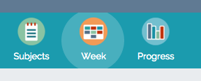
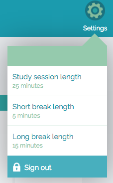
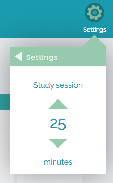
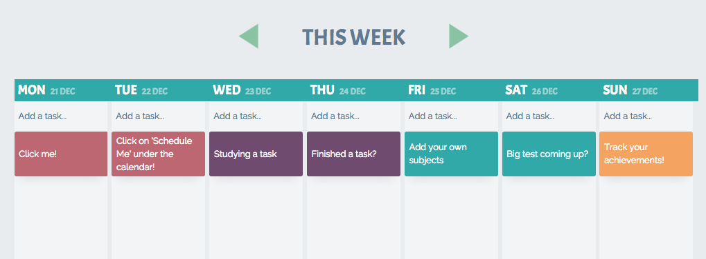
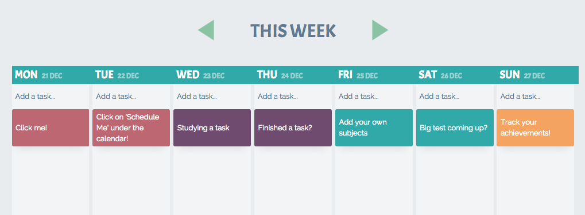

Ruzo
UX Design Process
Ruzo is an iPad app aimed at students, to help them plan and manage their study, and work more effectively. It was designed and built by myself and Tali Lavi, over the course of six months, as part of a masters in Creative Digital Media (Interaction Design).
Download Ruzo on the App Store here.
We took a user-centred approach to the design of Ruzo. Thorough user research underpinned our concept and design, and regular user testing infomed our progress at every step. Read below for a rough outline of our UX design process.
User Research
Our first step was to begin the process of understanding our user. We created an online survey to learn about the study habits of leaving cert students. We also conducted more in depth interviews with a small focus group. We wanted to find out about the attitudes of our users towards studying and exams, so that we could better understand what motivates them and what they need.
Defining our user
Based on this research we created a persona, representing a typical user of Ruzo, and analysed what they might need and want from an app like this one. This persona helped us to define the core elements of our app and how the user might interact with them.
Sarah is a seventeen year old student, in secondary school. She is just beginning sixth year, the year of the Leaving Cert. In terms of academics, it is going to the most stressful year she has encountered so far. She will have Christmas exams, Mocks, Oral Exams, and finally, the Leaving Cert itself. Like many of her classmates, Sarah experiences feelings of fear and trepidation whenever she thinks of all that lies ahead.
Sarah wants to do well in school, and she puts quite a lot of pressure on herself. She wants to study engineering when she finishes school, and this will require her to get 450 points in the Leaving Cert, and an honour in Maths.
Sarah knows that the best thing to do is to study all her subjects regularly, so that the the work doesn’t build up. This is easier said than done for her. She sometimes becomes overwhelmed when she thinks of the amount of work ahead of her, and she finds it very difficult to get started. She procrastinates and puts off having to face the workload, and as she does, her anxiety builds.
When she does finally begin to study, she finds it quite hard to focus. She keeps her iPad with her in the room, because it holds most of her schoolbooks and she needs it to study. Unfortunately it also has Facebook, and Instagram and she sometimes gets distracted by notifications coming in. Her productivity is sometimes quite low, and when she finishes up a she feels as though she has been studying for hours and not achieved anything. Like most of her friends, she measures her study by how many hours she has put in, not by how productive those hours were.
Once we had a clearer picture of our user, we began to design with her needs in mind.
Ruzo will help Sarah to...
Ruzo will help Sarah to organise and manage her study. It will allow her to create and maintain a study plan, so that she can feel like she is on top of her work. She can create subjects, and within these, tasks that need to be covered. She can push tasks from her ‘Schedule Me’ area onto a weekly planner, and once they are completed she can have the satisfaction marking them as done. They will remain on the calendar greyed out to remind her of what she has completed.
Ruzo will also help Sarah to study more effectively. When she chooses a task to study, the card supplies her with a study timer. Pomodoro is a technique that involves breaking work time up into 25 minute chunks, with five minute breaks in between. As Francesco Cirillo, creator of the Pomodoro technique writes, “time, rather than being a stress-inducing factor, becomes our ally” (2006). The study timer will help her to be more efficient, by focusing on one task at a time, and encourages her to take regular breaks to keep her from burning out.
Ruzo can keep track of all of the study Sarah has done, both her overall study, and for each subject. She can check out the statistics, to see which subjects she is spending most time on, and learn to understand her own study needs better. The app will show her a graph of when she studies the most, so she can learn what days she is most productive.
Ruzo will help Sarah to stay motivated. It will give her personal feedback, remind her if she hasn’t studied a particular subject in a while, and congratulate her if she hits a new record with her tasks completed. Ruzo is designed to give feedback that seems as personal as possible, so that Sarah feels as though she has an ally in her study.
Hopefully, this will help motivate her to keep on studying regularly, so that she won’t find herself overwhelmed as exam time comes, and there will be no need for her to cram.
Putting pencil to paper
As always, we began the design process through sketching. It was the quickest and most effective way to record ideas, and to identify which ones have potential.
Design, test, repeat...
Paper prototypes for testing layout.
We made it a priority to begin testing Ruzo with users as early as possible, and letting the results guide our design process. We used several different tools and techniques for prototyping, from rough paper prototypes to test layouts and drag-and-drop interactions, to more complex prototypes using InVision and Axure. With every round of user testing, we made changes and steadily improved the usibility of our design.
We used Axure extensively to test interactions like draggable cards, sliding menus and toggling elements. It is a robust prototyping tool which allows for conditional logic and dynamic content panels. It gave us the opportunity to solve usability issues that would arise, before committing anything to code. One of our early Axure prototypes can be seen here.
It wasn't until happy with our core interactions, that we began to work on the UI. I used sketch to create high fidelity mockups of each screen. It was important to us that usability retain priority over visual design, so every icon, font and error message was designed for clarity and ease of use.
UX Design Principles
There were several principles of good UX that guided us designing this app, and we made sure to adhere to them with every new iteration of the design. We adapted our principles from Jakob Nielsen’s ‘Usability Heuristics for User Interface Design’, and inspiration was also taken from Bruce Tognazzini’s ‘First Principles of Interaction Design’.
1. The user’s workflow should be efficient
As we designed we looked for any areas where the user would make unnecessary extra taps to access what they wanted, and eliminated them where possible.
In the very first iteration the app would open on a Profile page, from which they could access their calendar or subjects. Tests showed us that the first thing users did was to go straight to the calendar, and so we realised that we should eliminate this step, and open the app straight on the calendar page.
2. Navigation should be simple
We kept to a flat navigational structure, with only three pages, Progress, Subjects, and Week. There is no need to cycle back through pages using a back button as there would be with a hierarchical structure. Every page is accessible in only one tap from where the user currently is.
Icons in the navigation bar are accompanied by text labels for clarity and ease of understanding. An indication in the form of a highlight ensures that the user always knows where they are currently.
3. The app should help the user avoid mistakes
In cases where the user might be about to make an irreversible change, the app provides them with a warning message that they must confirm to proceed. If they are about to delete a subject, a task, or change the colour of a subject to a colour that’s already being used, they will be asked, ‘Are you sure?’.


4. Error messages should be appropriate and accurate
If there has been an error on the part of the user, or the app, the user should be given an appropriate description, and advice on how to proceed. This can be seen in the errors provided if the user tries to add tasks without choosing a subject, tries to log in without a correct email, or if there is no internet access available.


5. Users should be given flexibility and freedom
 Where possible, the app should not limit the user’s freedom to do things their way. On the task cards, there is a field for a description and a date, but it is not mandatory to fill out. There is also some flexibility to change the settings of the app, while the pomodoro timer is set up to have 25 minute sessions with 5 min breaks, this is fully customisable.
6. Users might need initial guidance through the app
We designed an on-boarding system for first time users of the app, so that they would be given a clue as to how to use it. On-boarding consisted of a set of cards on the timetable, each with an explanation of a different area of the app. These cards can be kept for as long as the user wants, to refer back to, or deleted if the user doesn’t want them.
 

The Tech Stuff
Ruzo is a hybrid app, built using HTML5, CSS3, JavaScript and jQuery. We used PhoneGap to wrap it all up into an iOS-friendly package, providing access to the device’s native capabilities. We decided to use Firebase for all of our backend needs. Firebase is a web service (owned by Google) that provides a thin API layer allowing the client to access a noSQL database using JavaScript.
As we had already designed and thoroughly tested our app through interactive prototypes, there were not too many decisions to be made during the coding stage. During the development process we continued to test with users for usability issues, such as responsiveness and feedback.
Ruzo Promotional Video
All in all Ruzo took six months to design and develop from conception to final product. Ruzo can be found on the App Store here.